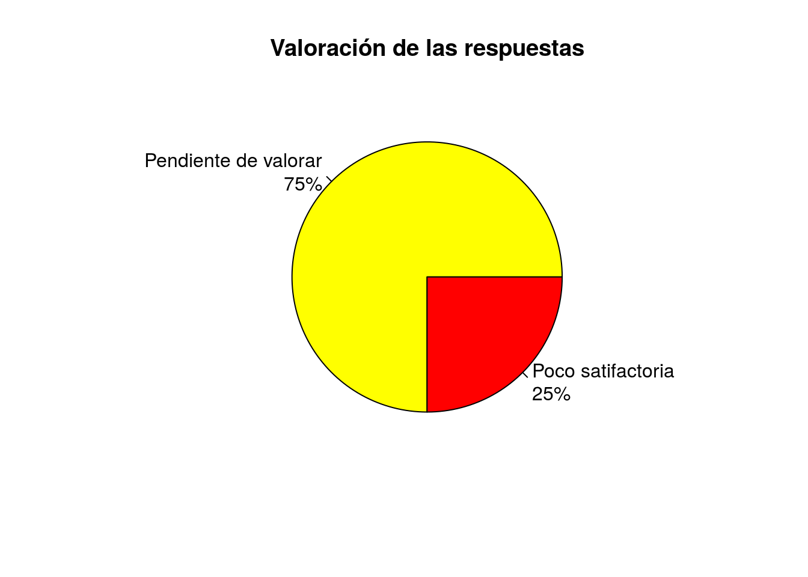

Peticiones de información de los grupos auditores de los distritos al Ayuntamiento de Madrid
Índice
Peticiones de información de los grupos auditores del Ayuntamiento de Madrid
Número total de peticiones: 6
Arganzuela
Petición 18/07/2016 13:40:18
Petición 18/07/2016 13:41:52
Petición 18/10/2016 13:22:24
Petición 18/10/2016 14:37:21
Usera
Petición 11/06/2016 13:03:41
Petición 11/06/2016 13:27:32
Tiempo medio de respuesta
64.3333 días.
Valoración de las respuestas
